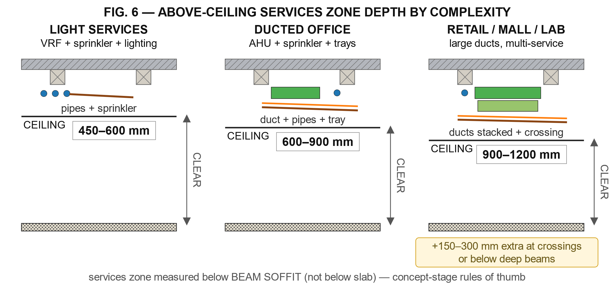
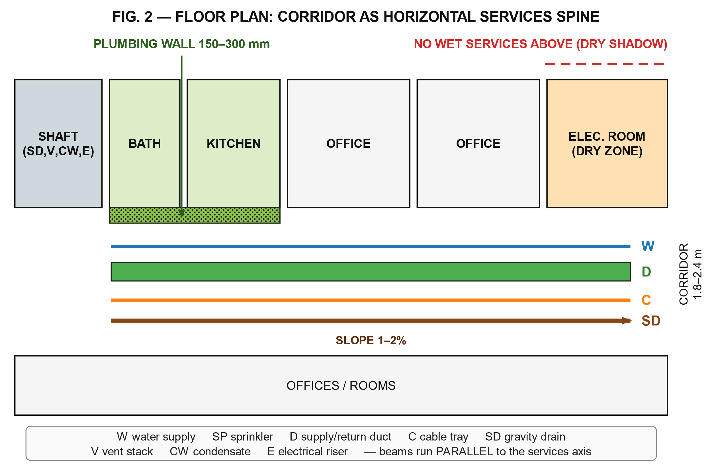
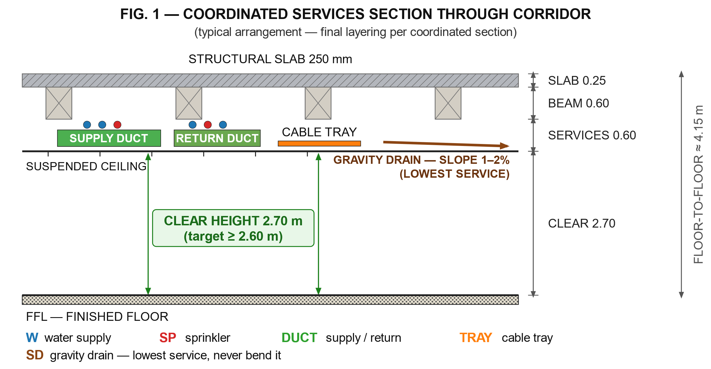
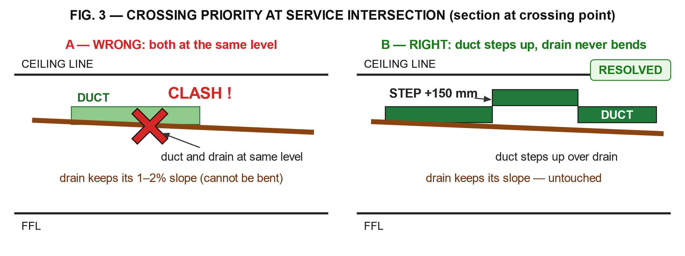
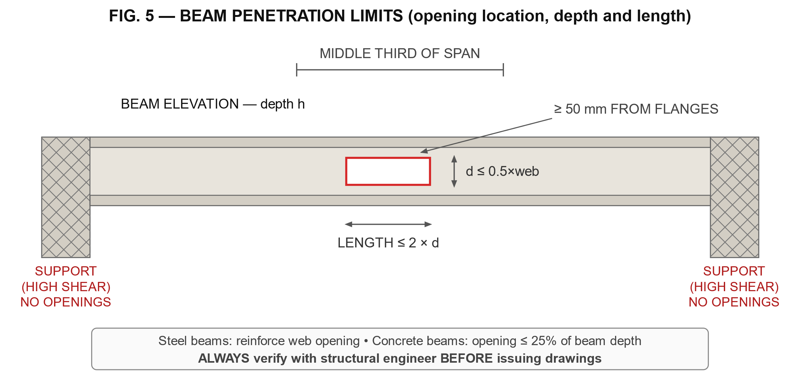
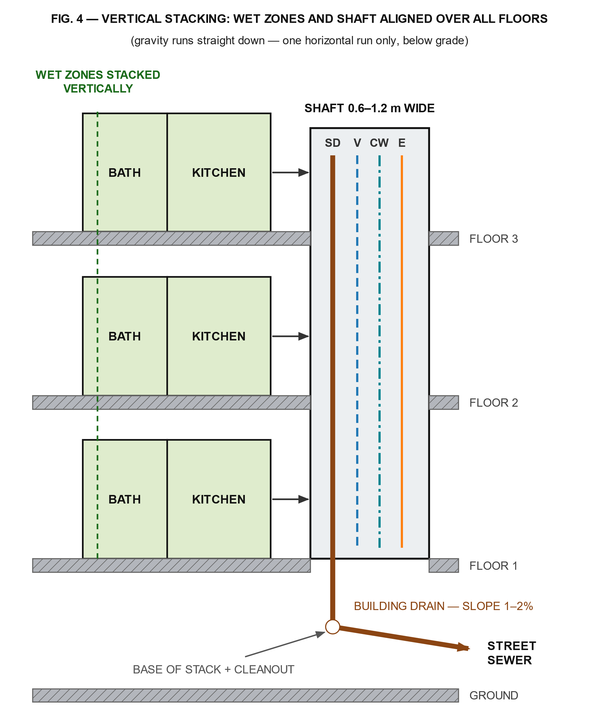

1. نطاق الدليل وكيفية استخدامه
📌 تنبيه هذه قيم تنسيقية إرشادية، لا بديل عن الكود المحلي والحسابات والاعتماد الهندسي.
هذا الدليل أداة تنسيق تصميمي موجه للمعماريين ومهندسي MEP في مرحلتي التصور المبدئي (SD) وتطوير التصميم (DD). يقدم القيم التنسيقية الإرشادية (Rules of Thumb) والمنهجية الصحيحة لاتخاذ قرارات المخططات والقطاعات قبل الوصول إلى مرحلة الحسابات التفصيلية.
تنبيهات جوهرية قبل البدء:
• القيم الواردة هنا قيم إرشادية أولية لتخطيط المساحات، وليست بديلاً عن الحسابات الهندسية أو الكود المحلي المعتمد.
• الأقطار النهائية للمواسير والدكتات تتحدد بالأحمال الفعلية (وحدات التجهيزات، معدلات الهواء) وليس بالقيم الجدولية وحدها.
• الكود المحلي وجهة اعتماد الجهات المختصة (الدفاع المدني، شركة الكهرباء والمياه، البلدية) هو المرجع النهائي عند أي تعارض.
• الفرق بين مصطلحين سيُستخدمان كثيراً في هذا الدليل:
• الارتفاع الصافي للسقف (Clear Ceiling Height): المسافة من الأرضية النهائية إلى سطح السقف المستعار — يخص راحة المستخدم.
• عمق الفراغ فوق السقف (Plenum Depth): المسافة من أسفل البلاطة/الكمرة إلى السقف المستعار — يخص مرور التمديدات.
• يتضمن الدليل ستة رسومات تخطيطية (مسقطاً أفقياً وقطاعات رأسية) مع نسخة نصية مبسطة داخل كل رسم لسهولة الطباعة والنقل إلى ملفات العمل:
الرسم | الموضوع | القسم |
|---|---|---|
الرسم 1 | مقارنة أعماق الفراغ فوق السقف حسب تعقيد الخدمات | 4.4 |
الرسم 2 | المسقط الأفقي — الممر كشريان خدمات | 5.4 |
الرسم 3 | القطاع المنسق للخدمات في الممر | 6.5 |
الرسم 4 | حل التقاطع بين الدكت والصرف بالجاذبية | 6.5 |
الرسم 5 | حدود فتحة الكمرة | 6.5 |
الرسم 6 | التكديس الرأسي للمناور والشريط الصحي عبر الأدوار | 6.5 |
2. لماذا التنسيق المبكر؟ الأرقام التي تبرر التكلفة
فقر التنسيق بين التخصصات ليس مشكلة "شكلية" بل مشكلة مالية مباشرة:
• سوء تنسيق MEP يسبب ما بين 35–50% من طلبات المعلومات (RFIs) و8–12% من قيمة العقد كأوامر تغيير في المشاريع ([1]).
• أعمال إعادة التنفيذ (Rework) تمثل حتى 20% من التكلفة الكلية و30% من مدة الجدول الزمني في المباني التجارية، بما يعادل نحو 273 مليار دولار سنوياً من أخطاء الإنشاء في الولايات المتحدة وحدها ([2]).
• إصلاح تعارض (Clash) في الموقع قد يكلف 10–20 ضعف تكلفة حله في مرحلة التصميم ([3]).
• كشف التعارضات المبكر بالنمذجة (BIM) قلّص أخطاء التصميم بأكثر من 70% ووفّر نحو 30% من وقت المشروع في دراسات تقييم كمية ([4]).
الخلاصة التنسيقية: كل ساعة تُنفق في تنسيق القطاعات والمساقط قبل إصدار الرسومات النهائية توفر أياماً من أعمال الكسر والحفر وإعادة الصب في الموقع.
3. جدول القيم التنسيقية السريعة (Quick Reference)
3.1 الكهرباء — مسافات التشغيل والصيانة
📘 كود NEC 110.26 — الأرقام مطابقة للجدول المترجم؛ تُراجع على الطبعة المعتمدة.
البند | القيمة الدنيا | المصدر / السياق |
|---|---|---|
عمق مساحة العمل أمام اللوحات ≤ 600 فولت (حالة 1) | 900 مم | جدول NEC 110.26(A)(1) ([5]) |
عمق مساحة العمل (151–600 فولت، حالة 2) | 1.0 م | جدول NEC 110.26(A)(1) ([6]) |
عمق مساحة العمل (حالة 3 — جهد أعلى/ظروف أصعب) | 1.2 م | جدول NEC 110.26(A)(1) ([7]) |
عرض مساحة العمل أمام اللوحة | عرض اللوحة أو 762 مم، أيهما أكبر | NEC 110.26(A)(2) ([8]) |
ارتفاع مساحة العمل من الأرضية | 1.98 م أو ارتفاع الجهاز إن كان أطول | ([9]) |
فتح الأبواب المفصلية | 90 درجة كاملة دون عوائق | ([10]) |
المساحة المخصصة فوق المعدات | حتى 1.83 م فوق المعدات أو حتى السقف الإنشائي | ([11]) |
مسافة اللوحة عن السقف | ≈ 0.9 م تخطيطياً | ([12]) |
قاعدة معمارية عملية: أبعاد غرفة الكهرباء تُشتق دائماً من بصمة المعدات الفعلية (جدول اللوحات) مضافاً إليها مسافات العمل أعلاه — لا من قاعدة رقمية جاهزة. كمثال تخطيطي فقط: خزانة توزيع صغيرة تحتاج أماماً نحو 0.9 م عمقاً × 0.9 م عرضاً صافياً، بينما لوحات الموزع الرئيسية (Switchgear) قد تتطلب غرفاً بعدة أمتار من كل جهة، مع باب يفتح للخارج ولا يُفتح على مسار مواسير مياه ([13]).
3.2 الصرف الصحي — الميول والأقطار الإرشادية
📘 كود IPC / IMC — الأرقام مطابقة لما في مراجع ومنشورات متاحة، ولم تُقابَل بنص الكود الرسمي؛ تُراجع على الطبعة المعتمدة.
الميول الدنيا الأفقية لمواسير الصرف (جدول IPC 704.1):
قطر الماسورة | الميل الأدنى |
|---|---|
≤ 2½ بوصة (65 مم) | 1:50 (≈ 2% — 20 مم لكل متر) |
3–6 بوصة (80–150 مم) | 1:100 (≈ 1% — 10 مم لكل متر) |
≥ 8 بوصة (200 مم) | 1:200 (≈ 0.5% — 5 مم لكل متر) |
المصدر: ([14])
ملاحظة: هذه الميول وفق IPC 704.1 (الأنبوب 3 بوصة بميل 1%). يضع ASPE (المجلد 2) وUPC الأنابيب حتى 3 بوصة بميل ¼ بوصة/قدم (2%)، ومن 4 إلى 6 بوصة بميل ⅛ بوصة/قدم (1%)، و8 بوصة فأكثر بميل 1/16 بوصة/قدم (0.5%). يُعتمد ما يقرّه الكود المحلي.
سعات الأفرع الأفقية بوحدات التجهيزات DFU (مختصر من جدول IPC 710.1(2)):
القطر | الفرع الأفقي المجموعي | ماسورة رأسية (≤ 3 فرع) |
|---|---|---|
2 بوصة (50 مم) | 6 DFU | 10 DFU |
3 بوصة (80 مم) | 20 DFU | 48 DFU |
4 بوصة (100 مم) | 160 DFU | 240 DFU |
6 بوصة (150 مم) | 620 DFU | 960 DFU |
المصدر: ([15])
قيم وحدات التجهيزات للأدوات الشائعة (IPC 709.1):
التجهيز | DFU | قطر السيفون الأدنى |
|---|---|---|
مغسلة | 1 | 1¼ بوصة (32 مم) |
حوض استحمام / بانيو | 2 | 1½ بوصة (40 مم) |
حوض مطبخ | 2 | 1½ بوصة (40 مم) |
مرحاض خاص (6 لتر/شطفة) | 3 | — |
مرحاض عام | 4 | — |
بالوعة أرضية | 2 | 2 بوصة (50 مم) |
مجموعة حمام كاملة (مرحاض + مغسلة + بانيو) | 5 | — |
المصدر: ([16]).
تنبيه بخصوص المرحاض: يذكر IPC أن أصغر Building Drain يخدم مرحاضاً هو 3 بوصة (80 مم)، بينما يُستخدم 4 بوصة (100 مم) كثيراً كاختيار محافظ للفروع الرئيسية وحالات الروافع (Flushometer) أو حسب الكود المحلي — لا يُعتمد أي قطر نهائياً دون مراجعة الكود المحلي والحسابات.
تهوية الصرف (Vents):
• ماسورة التهوية لا تقل عن نصف قطر ماسورة الصرف التي تخدمها، وبحد أدنى 1¼ بوصة (32 مم) ([17]).
• مسافة نقطتي التفتيش (Cleanouts) داخل المبنى: ≤ 30 م، وتُضاف نقطة عند كل تغيير اتجاه يزيد عن 45 درجة (في IPC 708.3.3 تكفي نقطة واحدة لكل 12 م من الطول المطوّر عند تعدد الانحناءات؛ ويعتمد UPC معيار 135° مجمّعة بدل 45°) ([18]).
• خلوص أمام نقطة التفتيش للمواسير ≤ 150 مم: 450 مم عمودية على فتحة التفتيش ([19]).
صرف المكيفات (Condensate):
• القطر الداخلي الأدنى ¾ بوصة (19 مم) ولا يقل عن قطر مخرج وحدة التكييف؛ يكفي قطر ¾ بوصة (19 مم) حتى قدرة تبريد ≈ 70 كيلوواط بحسب IMC ([20]).
• الميل الأدنى 1% (10 مم لكل متر) ([21]).
3.3 التكييف — سرعات الهواء وأقطار الدكتات
🛠 ممارسة قيم مرجعية من مصادر تجارية؛ تُراجع على ASHRAE Fundamentals وSMACNA.
سرعات الهواء الموصى بها (م/ث) حسب نوع المبنى:
العنصر | سكني | مدارس ومباني عامة | صناعي |
|---|---|---|---|
الدكت الرئيسي | 3.6–4.6 | 5.1–6.6 | 6.1–9.1 |
الدكت الفرعي | 2.5–3.6 | 3.0–4.6 | 4.1–5.1 |
الراوِز الفرعي الرأسي | 2.5 | 3.0–3.6 | 4.1 |
المصدر: ([22]) — القيم محوّلة إلى م/ث ومقرّبة لأقرب 0.1. وهي مرجعية أولية من مصادر تجارية، وتُراجع على ASHRAE Fundamentals (فصل تصميم الدكتات) وSMACNA قبل الاعتماد.
حدود الضجيج السكنية (ACCA Manual D): دكت الهواء المرسل ≤ 4.6 م/ث، والراجع ≤ 3.6 م/ث ([23]).
عمق الدكتات الرئيسية للتنسيق مع السقف: عادة 200–450 مم لكل مسار رئيسي، وهي قيمة يحكمها معدل الهواء — تقزيمها لا يوفر مالاً بل يولّد ضجيجاً وانخفاض راحة ([24]).
خلوصات تنسيقية شائعة الممارسة (غير ملزمة قانوناً — لا تُغني عن الكود): يُترك عادة 50–100 مم حول الدكت (شاملة العزل) وخلوص مماثل بين الخدمات المتجاورة لأغراض التركيب والتمدد والصيانة؛ القيم الملزمة تُؤخذ من الكود المحلي وكتالوجات المصنّعين.
4. ارتفاعات السقوف المستعارة وعمق الفراغ فوق السقف
هذا هو "الميزان الحقيقي" للتنسيق: كل مم تمنحه للتمديدات يُقتطع من الارتفاع الصافي، والعكس صحيح.
4.1 الارتفاعات الصافية الدنيا (مرجعية)
📘 كود + 🛠 ممارسة الحدان الأولان من BCBC (كندا)؛ والثالث ممارسة تصميمية.
النوع | الارتفاع الأدنى |
|---|---|
غرف المعيشة والنوم | 2.1 م على الأقل فوق مساحة محددة (مرجعية BCBC) ([25]) |
تمرير تحت الكمرات ومسارات العبور | 2.0 م ([26]) |
الممارسة التصميمية المريحة للمباني السكنية والتجارية | 2.6–3.0 م صافٍ (قيمة تخطيطية) |
4.2 عمق الفراغ فوق السقف (Plenum) حسب تعقيد الخدمات
🛠 ممارسة نطاقات إرشادية شائعة بين المصمّمين، لا نص كود.
نوع الخدمات فوق السقف | العمق الإرشادي الصافي |
|---|---|
خدمات خفيفة (إنارة، فريون VRF، رشاشات فقط) | 450–600 مم |
مكتب بدكتات AHU + رشاشات + مسارات كابلات | 600–900 مم |
تجزئة/مولات/معامل بدكتات كبيرة وخدمات متعددة | 900–1200 مم |
تقاطعات خدمات أو مرور تحت كمرات عميقة | +150–300 مم إضافية |
المصدر: ([27]). هذه الأعماق تُحسب من أسفل الكمرة وليس من أسفل البلاطة.
قيم أدق حسب نظام التوزيع (تُقاس من أسفل البلاطة الإنشائية إلى السقف النهائي بافتراض عدم وجود كمرات؛ تُضاف أعماق الكمرات عند وجودها):
النظام | الحد الأدنى | المفضل |
|---|---|---|
دكت مستطيل منخفض السرعة | 600 مم | 750 مم (عمق الدكت + 50 مم) |
دكت دائري عالي السرعة | 450 مم | 600 مم (قطر الدكت + 100 مم) |
أسقف مشعة (Radiant) | 300 مم | 400 مم |
chilled beams | 450 مم | 600 مم |
توزيع هواء تحت الأرضية | 300–450 مم بلاطة مرتفعة | 450 مم |
المصدر: ([28])
4.3 مثال رقمي يوضح "فخ الارتفاع"
🛠 مثال مثال توضيحي لا حالة قياسية.
مبنى مكاتب وُعد بارتفاع صافٍ 3.2 م: دكت رئيسي 200–450 مم + رشاشات 100–200 مم + مسارات كابلات 100–150 مم (دون احتساب الكمرات) التهمت معاً في حدودها الدنيا نحو 400 مم أو أكثر، فهبط السقف الفعلي إلى 2.8 م أو أقل، وتزيد الكمرات (300–900 مم) الأمر سوءاً — وهو ما يُكتشف بعد اعتماد القطاع فيصعب تداركه ([29]).
القاعدة التنسيقية الذهبية: يجب رسم قطاع تنسيقي خدمات (Coordinated Services Section) لكل نموذج فراغ ممثل — خاصة الممرات — قبل تثبيت ارتفاع الباكية (Floor-to-Floor).
4.4 رسم مقارن لأعماق الفراغ حسب تعقيد الخدمات

الرسم 1: مقارنة أعماق الفراغ فوق السقف حسب تعقيد الخدمات
نسخة نصية مبسطة للرسم:
النسخة النصية للرسم (للطباعة والنقل)
LIGHT (450-600 mm) OFFICE (600-900 mm) RETAIL (900-1200 mm)
==================== ==================== ====================
slab + beams slab + beams slab + beams
(W)(SP) pipes (W)(SP) pipes (W)(SP) pipes
[==== DUCT ====] [==== DUCT ====]
SD ==== [ DUCT ] tray [==== DUCT ====]
SD ==== tray tray + SD ====
--- CEILING ---- --- CEILING ---- --- CEILING ----
CLEAR HEIGHT CLEAR HEIGHT CLEAR HEIGHT
(+150-300 mm extra
at crossings)الرسم يوضح مقارنة الأعماق الإرشادية الثلاثة من قسم 4.2 — العمق يُقاس من أسفل الكمرة وليس من أسفل البلاطة، والارتفاع الصافي أسفل السقف يبقى ثابتاً بقرار معماري.
5. قواعد المساقط الأفقية
5.1 أولويات ترتيب الخدمات في الممر
🛠 ممارسة قواعد تنسيق مبنية على الخبرة؛ ليست متطلبات كود.
عند تراكب الخدمات في ممر واحد، تُتبع هذه الأولويات التنسيقية (وليست تدرجاً ثابتاً — الترتيب النهائي يحسمه القطاع المنسق لكل مشروع):
1. يُحسب منسوب الصرف بالجاذبية أولاً — لأنه الخدمة الوحيدة غير القابلة للتلاعب (الميل مقدس والاتجاه نحو المناور)، فيُثبّت مساره ومستواه قبل الجميع.
2. تُحجز المناطق المستقيمة للدكتات الرئيسية — لأنها أكبر الخدمات مقطعاً وأكثرها حساسية للانحناءات (فقد ضغط وضجيج).
3. تُبعد الخدمات الرطبة فوق مسارات الكابلات واللوحات الكهربائية قدر الإمكان، درءاً للتسرب ولمتطلبات المساحة المخصصة للمعدات.
4. تُبقى المسارات والصمامات والستائر في متناول الصيانة — لا معنى لتنسيق بلا وصول.
5. الخدمات المرنة (مواسير التغذية المضغوطة، الكابلات، خطوط الفريون) هي التي تلتف وتتدرج في الفراغ المتبقي.
النتيجة العملية الشائعة: المواسير المضغوطة أعلى (ملاصقة البلاطة/بين الكمرات)، والدكت الرئيسي تحتها، والصرف الجاذبي عند أدنى مستوى ممكن باتجاه المناور — لكن هذا ترتيب نمطي يُعدّل حسب القطاع المنسق.
5.2 قاعدة أولوية المسارات عند التقاطع الحتمي
🛠 ممارسة قاعدة أولويات عند التقاطع.
عندما يكون التقاطع لا مفر منه، يُحسم بمنطق التكلفة التعديلية:
1. الصرف بالجاذبية أولاً: لا يمكن "رفع" صرف بالجاذبية إلا بكسر الميل وتكوين انسداد مستقبلي — تُمرر باقي الخدمات فوقه أو حوله.
2. الدكت الرئيسي ثانياً: كسره أو تقزيمه يضاعف فقد الضغط والضجيج؛ يمكن فقط تغيير مستواه عمودياً بحشوة (Offset) انسيابية.
3. الكابلات والمواسير المضغوطة أخيراً: الأرخص تكيّفاً — تلتف حول الجميع.
5.3 مناطق "منع التقاطع" (No-Crossing Zones) في المسقط
🛠 ممارسة مناطق منع التقاطع.
المنطقة | السبب | البديل التنسيقي |
|---|---|---|
فوق لوحة كهرباء أو غرفة لوحات | منع تسرب مياه فوق معدات حية + متطلبات NEC للمساحة المخصصة ([30]) | حجز "ظل جاف": لا مواسير مياه/صرف أعلى الغرفة، أو حوض تجميع (Drip Pan) مع إنذار |
مسار مستقيم بين غرفة التكييف وأكبر حمل | كل انحناء دكت = فقد ضغط + ضجيج | حجز ممر خدمات (Services Corridor) بارتفاع موحد |
فوق حوض مطبخ / أسفل منسوب صرف المرحاض | الميول الجاذبية لا تقبل المساومة | إسقاط الصرف في مناور الحمامات والمطابخ مباشرة |
محور الكمرات الرئيسية (مع الالتزام بقواعد الفتحات — قسم 6.2) | فتح الكمرة مكلف ويتطلب موافقة إنشائية | مسارات الدكتات موازية للكمرات وليست عمودية عليها |
5.4 الرسم التخطيطي للمسقط الأفقي — الممر كشريان خدمات

الرسم 2: المسقط الأفقي — الممر كشريان خدمات
نسخة نصية مبسطة للرسم:
النسخة النصية للرسم (للطباعة والنقل)
+------+--------+---------+--------+--------+----------+ |SHAFT | BATH | KITCHEN | OFFICE | OFFICE | ELEC RM | |SD,V, |[wet wl]|[wet wl]| | | (DRY) | |CW,E | | | | | | +------+--------+---------+--------+--------+----------+ | W ----------------------------------------------> | | D ==============================================> | | C ----------------------------------------------> | CORRIDOR | SD ===== SLOPE 1-2% ==========================> | 1.8-2.4 m +------------------------------------------------------+ | | OFFICES / ROOMS | +--------------------------------------------------------+ beams (dashed) run PARALLEL to corridor axis
العنصر في الرسم | القاعدة التنسيقية التي يجسدها |
|---|---|
SHAFT في نهاية الممر | كل الخدمات تبدأ من المناور وتجري موازية لمحور الممر (قسم 5.1) |
W / D / C / SD خطوط متوازية | الترتيب الطبقي: مياه أعلى ← دكت ← كابلات ← صرف بالجاذبية أدنى خدمة بميل ثابت (1–2% حسب القطر) |
WET WALL خلف الحمام والمطبخ | جدار سباكة 150–300 مم يجمّع التغذية والصرف للشريط الصحي (قسم 6.4) |
غرفة الكهرباء ضمن منطقة جافة (DRY SHADOW) | لا خدمات رطبة فوق غرفة الكهرباء (قسم 5.3 وقاعدة الظل الجاف) |
خطوط الكمرات موازية للخدمات | المسارات الموازية للكمرات تلغي الحاجة إلى فتحها (قسم 5.3) |
6. قواعد القطاعات الرأسية
6.1 بناء منطقة السقف (Ceiling Zone Build-Up) — قطاع نموذجي لممر مكاتب
🛠 ممارسة قطاع نموذجي؛ الأعماق تُشتق من القطاع المنسق لكل مشروع.
من أعلى لأسفل (باكية ≈ 4.15 م مثالاً: بلاطة 250 مم، كمرة 600 مم، فراغ 600 مم، ارتفاع صافٍ 2.7 م):
الطبقة | العمق النموذجي | ملاحظة |
|---|---|---|
البلاطة الإنشائية | حسب النظام الإنشائي | — |
الكمرة (Drop Beam) | 300–900 مم حسب البحر ([31]) | تحدد العمق المتاح فعلياً |
مواسير تغذية ورشاشات | 100–200 مم | تمر بين الكمرات |
دكت رئيسي | 200–450 مم | يمر تحت الكمرات عادة |
مسارات كابلات | 100–150 مم | بفصل عن الخدمات الرطبة |
صرف جاذبية (إن وُجد) | حسب الميل (1–2%) | يحسم أدنى نقطة في السقف |
هيكل السقف المستعار + بلاطة جبس | 30–50 مم | — |
الارتفاع الصافي المتبقي | ≥ 2.6–2.7 م | الهدف التنسيقي |
6.2 فتحات الكمرات والبلاطات — الحدود الإنشائية للتمرير
≈ تقدير حدود إرشادية للفتحات؛ لا يُعتمد أي فتح قبل مراجعة إنشائية موثقة (ACI 318-19 البند 8.5.4 للبلاطات).
عند حاجة الدكت أو الماسورة للمرور عبر عنصر إنشائي، تعمل هذه الحدود الإرشادية ([32]):
العنصر الإنشائي | الحد الإرشادي للفتحة | الموقع المفضل |
|---|---|---|
كمرة فولاذية (فتحة مستطيلة بلا تقوية) | العمق ≤ 0.5 × عمق الرواق (Web)، الطول ≤ 2 × عمق الفتحة | الثلث الأوسط من البحر، بعيداً عن مناطق القص قرب الارتكازات، وبخلوص ≥ 50 مم عن الأجنحة (Flanges) |
بلاطة خرسانية (تفريغ/ثقب) | 150–200 مم قطر بدون تسليح إضافي | تجنب مناطق التقوية والاتصالات بين الأعمدة |
كمرة خرسانية | ≤ 25% من عمق الكمرة | منتصف العمق، الثلث الأوسط |
جدران حمل حجرية | مساحة فتحات إجمالية < 25% لمقطع الجدار | — |
قاعدة تنسيقية: لا يُرسم أي فتح كمرة في رسومات MEP دون مراجعة إنشائية موثقة. مسار موازٍ للكمرة دائماً أرخص من فتح عبرها.
6.3 المناور الرأسية — التكديس (Stacking) عبر الأدوار
🛠 ممارسة قواعد تكديس المناور؛ إيقاف الحريق يخضع لكود الحريق المحلي.
• محور ذهبي: الحمامات والمطابخ فوق بعضها رأسياً، ومناورها فوق بعضها — انحراف عمود الصرف أفقياً بين الدورين يخلق احتياج "انحدار جانبي" يأكل منطقة السقف بالكامل.
• فتحات المناور الرأسية عبر بلاطات الأدوار تحتاج إيقاف حريق (Firestopping)، وتُعالج عبورات الدكتات للحواجز المقاومة للحريق بستائر حريق/دخان أو بإيقاف حريق حسب تصنيف الحاجز ومتطلبات الكود والاستثناءات المعتمدة — ليست كل عبور يستوجب ستارة ([33]).
• مواد إيقاف الحريق عند الفتحات تقلل مساحة الفتح الصافية بنسبة 10–15% — تُحجز الفتحات بهامش إضافي ([34]).
• لوحات الوصول (Access Panels) إلزامية عند: السيفونات (P-traps)، محابس، الستائر (Dampers)، صناديق وصل، ونقاط تفتيش الصرف. تصميم خالٍ من التعارضات لكن بلا وصول صيانة هو فشل تنسيقي كامل.
6.4 أبعاد المناور الإرشادية
≈ تقدير أبعاد تخطيطية للتصور المبدئي؛ تُعتمد من المهندس المختص.
نوع المناور | المساحة/البعد الإرشادي | ملاحظات |
|---|---|---|
مناور رافع كهربائي (Busduct/كابلات LT+ELV منفصلة) | 1.0–2.0 م² لكل مجموعة | ([35]) |
مناور سباكة (تغذية + صرف + تهوية) | عرض 0.6–1.2 م والعمق بعدد المواسير | نفس المصدر |
مناور HVAC (VAV دكت مزدوج) | ≈ 2.4 × 1.8 م، كل 24–30 م | ([36]) |
مناور VAV دكت مفرد | ≈ 1.8 × 1.5 م، كل 30–37 م | نفس المصدر |
مناور VRF (خطوط فريون) | ≈ 0.6 × 0.6 م | نفس المصدر |
مناور مشترك (HVAC + سباكة) | ≈ 3.0 × 2.4 م | نفس المصدر |
جدار سباكة (Plumbing Wall) لحمامات متجاورة | 150–300 مم عرض داخل الجدار | قاعدة 150–300 مم للجدار الحامل لمواسير DWV ([37]) |
6.5 الرسومات التخطيطية للقطاعات الرأسية
الرسم 3: القطاع المنسق للخدمات في الممر

الرسم 3: القطاع المنسق للخدمات في الممر
نسخة نصية مبسطة للرسم:
النسخة النصية للرسم (للطباعة والنقل)
=================== SLAB SOFFIT (250 mm) ==================== BEAM 600 BEAM 600 BEAM 600 (W)(W)(SP) (W)(W)(SP) <- top [ SUPPLY DUCT ] [ RETURN DUCT ] [ CABLE TRAY ] <- mid ~ SD === SLOPE 1-2% =================> SHAFT <- lowest ------------------- SUSPENDED CEILING ---------------------- |< CLEAR HEIGHT >= 2.60 m >| ========================== FFL ==============================
الرمز في الرسم | المعنى |
|---|---|
W | مواسير التغذية — الطبقة العليا الملاصقة للبلاطة |
SP | خط الرشاشات |
SUPPLY / RETURN DUCT | دكت الهواء المرسل / الراجع (200–450 مم عمقاً) |
CABLE TRAY | مسار الكابلات (100–150 مم) |
SD | الصرف بالجاذبية — أدنى خدمة، ميل 1–2% حسب القطر (جدول IPC 704.1) باتجاه المناور |
الأرقام في الرسم مثال محافظ لمكتب مُدكت بكمرات 600 مم وعمق فراغ فوق السقف 600 مم (الباكية في المثال ≈ 4.15 م، والباكيات الشائعة 3.6–4.0 م — قسم 7.1) — الأبعاد الفعلية تُشتق من القطاع المنسق لكل مشروع. ملاحظة: مواسير التغذية والرشاشات (W/SP) فوق الدكتات، ومسار الكابلات في محور جانبي منفصل؛ فلا مواسير مياه فوق الكابلات مباشرة.
الرسم 4: حل التقاطع بين الدكت والصرف بالجاذبية

الرسم 4: حل التقاطع بين الدكت والصرف بالجاذبية
نسخة نصية مبسطة للرسم:
النسخة النصية للرسم (للطباعة والنقل)
A) WRONG - SAME LEVEL B) RIGHT - DUCT STEPS UP
D [======= DUCT =======] D [== DUCT ==]____
=========X=========== (step up +150 mm)
SD ~~~ 1-2% ~~~> SD ~~~ 1-2% ~~~> (untouched)
X = CLASH the drain never bends;
(drain cannot move) the flexible service movesالرسم يجسد قاعدة أولوية المسارات (قسم 5.2): الصرف بالجاذبية لا يُثنى ولا يُرفع — الدكت هو من يعلو بحشوة انسيابية قبل نقطة التقاطع ويعود إلى منسوبه بعدها.
الرسم 5: حدود فتحة الكمرة

الرسم 5: حدود فتحة الكمرة
نسخة نصية مبسطة للرسم:
النسخة النصية للرسم (للطباعة والنقل)
SUPPORT |<- middle third ->| SUPPORT
================= ====================== =================
### high shear # [ OPENING ] # high shear ###
### NO openings # [ depth <= 0.5xweb] # NO openings ###
### zone # [ length <= 2xd ] # zone ###
================= ====================== =================
>= 50 mm from flangesالرسم يجسد حدود الفتحات الإنشائية (قسم 6.2): الفتحة في الثلث الأوسط من البحر، بعيداً عن مناطق القص قرب الارتكازات.
تنبيه: هذه الحدود تخص فتحات إرشادية في رواق كمرة فولاذية غير مقوّاة؛ فتحات الكمرات الخرسانية تُراجع بحد 25% من عمق الكمرة وباعتماد الإنشائي قبل إصدار الرسومات.
الرسم 6: التكديس الرأسي للمناور والشريط الصحي عبر الأدوار

الرسم 6: التكديس الرأسي للمناور والشريط الصحي عبر الأدوار
نسخة نصية مبسطة للرسم:
النسخة النصية للرسم (للطباعة والنقل)
F3 | BATH | KITCHEN |---\
----+-----+---------+ \
F2 | BATH | KITCHEN |-----+--> SHAFT: SD, V, CW, E
----+-----+---------+ / (0.6 - 1.2 m wide)
F1 | BATH | KITCHEN |---/
----+-----+---------+
GND: SD === SLOPE 1-2% ====> STREET SEWER
(base of stack + cleanout)الرسم يجسد قواعد التكديس (قسم 6.3): الصرف ينزل مستقيماً بلا انحراف، ولا يُضاف مسار أفقي واحد إلا تحت منسوب الأرضي باتجاه شبكة الشارع (الميل حسب القطر: غالباً 1–2% وفق جدول IPC 704.1).
7. أثر القرارات المعمارية على كفاءة وتكلفة التمديدات
7.1 مصفوفة أثر القرارات المعمارية
🛠 ممارسة / ≈ تقدير مصفوفة قرار تنسيقية.
القرار المعماري | الأثر الإيجابي عند إحسانه | الكلفة عند إساءة اتخاذه | التوصية التنسيقية |
|---|---|---|---|
موقع المناور (النواة الخدمية) | مسارات قصيرة متساوية لجميع الأدوار، غرف لوحات قرب العناصر | تمديدات ممتدة بأضعاف الطول، فقد حمل في المضخات والمراوح، فولتية هبوط | مركزية المناور ضمن نصف قطر خدمة ~15 م من أبعد حمام/مطبخ؛ قرب غرفة الكهرباء من مركز الأحمال |
تجميع الحمامات والمطابخ فوق بعضها | عمود صرف واحد مستقيم، نقطة تفتيش واحدة | محاولات صرف جانبية بميول مقنّعة فوق سقف الدور الأسفل، تسريبات مستقبلية | شريط صحي (Wet Zone) متطابق في المسقط النمطي لكل الأدوار |
عرض الممر | ممر 1.8–2.4 م يستوعب الطبقات الخمس للخدمات فوقه بانسجام | ممر 1.5 م يجبر على تزاحم وضجيج وغالباً خسارة ارتفاع السقف | تخصيص الممر كـ"شريان خدمات" أفقي رسمي، بمنطقة فراغ ≥ 450–600 مم فوقه |
ارتفاع الباكية (Floor-to-Floor) | باكية كافية = ارتفاع صافٍ كامل + عمق فراغ مريح فوق السقف | باكية شحيحة تُختصر من الصافي، أو كشف خدمات مكشوف غير مقبول | سكني: 3.0–3.3 م؛ مكاتب مدكتة: 3.6–4.0 م كحد تخطيطي شائع |
الفتحات الخارجية والشرفات | مواقع طبيعية لوحدات التكثيف والـ FAHU | واجهة غير منسقة = وحدات مكثف متناثرة تكسر الواجهة وتُطيل خطوط الفريون | حجز كوات/منصات مخفية للوحدات الخارجية ضمن تصميم الواجهة منذ البداية، مع خلوص صيانة ≥ 500 مم حول الوحدة |
مواقع غرف الكهرباء والتكييف | قرب مركز الأحمال يقلل هبوط الجهد ومساحة الكابلات | غرفة كهرباء في أقصى المبنى = أعمدة كابلات أكبر وأغلى | قرب المحول/اللوحة الرئيسية من المدخل الكهربائي، وغرفة التكييف قرب المنور الرئيسي |
الشرفات الفنية/الفتحات في السقف | صيانة خارجية سهلة للمعدات السطحية | صيانة عبر تفكيك سقف مستعار | اعتماد مسار وصول وخدمة (2% ميل) لمعدات السطح |
7.2 تأثير طول مسار الفريون (VRF) على التصميم
🏭 المصنّع حدود VRF يضعها المصنّع للموديل.
• الأطوال القصوى تختلف جذرياً حسب المصنّع والنظام، ولا تُثبّت مواقع الوحدات قبل الرجوع إلى كتالوج الشركة المعتمدة.
• كمرجعية عامة: لا يوجد حد موحد؛ فرق المنسوب بين الوحدة الخارجية وأبعد وحدة داخلية يتراوح غالباً بين 30 و50 م، وحتى 90 م بشروط في بعض الموديلات ([38])، وتبلغ الأطوال الفعلية نحو 165 م (190 م مكافئة) في أنظمة Daikin وMitsubishi التجارية الكبيرة ([39]) — دائماً وفق بيانات المصنّع المحدد.
• الترجمة المعمارية: كل 10 م إضافية من خطوط الفريون تعني فقداً في قدرة التبريد وشحناً إضافياً من غاز التبريد — موقع الوحدات الخارجية ليس قرار واجهة فقط بل قرار كفاءة طاقة.
8. منهجية تحديد الأقطار (كيف تُشتق الأرقام فعلياً)
الجداول أعلاه تعطي نقاط انطلاق تخطيطية؛ الأقطار النهائية تُشتق بالمنهجيات التالية:
النظام | منهجية التحجيم | المدخلات المطلوبة |
|---|---|---|
الصرف الصحي | تجميع وحدات التجهيزات (DFU) لكل فرع ثم مطابقتها بجداول السعة حسب القطر والميل (جداول IPC 710.1) | عدد ونوع التجهيزات، طول المسار، الميل المتاح |
التهوية (Vents) | الطول المطوّر مقابل وحدات التجهيزات المتصلة، بحد أدنى نصف قطر الصرف ولا يقل عن 1¼ بوصة (32 مم) ([40]) | جداول التهوية، مادة الماسورة |
الدكتات | حساب معدل الهواء المطلوب ثم اختيار المقطع من معادلة Q = A × V عند سرعة الهدف (سرعات NORDIX/ACCA أعلاه) | حمل حراري/تكييف لكل فراغ، حد الضجيج المسموح |
مواسير المياه والرشاشات | حساب فقد الاحتكاك والمعدل التشغيلي (Hazen-Williams للمطفآت) | ضغط المصدر، أطوال المسارات، معدل التدفق |
مواسير الفريون | جداول المصنّع حسب سعة الوحدة وطول الخط وانحرافه | سعة الوحدات، الأطوال الفعلية والمكافئة |
الكابلات والمواسير الكهربائية | عدد الكابلات ونسبة التعبئة المسموحة ومعاملات التصحيح الحراري، لا قطر معماري جاهز | الأحمال، مسارات التسليك، ظروف التركيب |
9. مصفوفات القرار (Decision Matrices)
9.1 مصفوفة 1: أين نضع المنور الرئيسي؟
🛠 أداة قرار مصفوفات للمقارنة، لا قيم كود.
المعيار (الوزن) | مركز المبنى | طرف المبنى (قرب الواجهة) | قرب النواة والسلم |
|---|---|---|---|
طول المسارات الأفقية (×3) | ممتاز — متساوية لكل الاتجاهات | ضعيف — أطول مسار ممكن | جيد جداً |
بساطة الصرف الجاذبي (×3) | ممتاز | جيد | جيد جداً |
تأثير الواجهة/الإضاءة (×2) | ممتاز — لا يمس الواجهة | ضعيف — كوات في الواجهة | ممتاز |
الوصول للصيانة (×2) | جيد (يتطلب باب من ممر) | ممتاز (وصول مباشر) | جيد |
التكلفة الإنشائية (×1) | متوسطة (تقاطعات مع الكمرات) | عالية أحياناً (قرب الأعمدة الطرفية) | ممتازة (ضمن النواة) |
التوصية | الخيار الافتراضي | فقط لو فرضه مخطط الحمامات | خيار ممتاز متاح غالباً |
9.2 مصفوفة 2: هل نرفع منسوب الباكية أم نخفض السقف المستعار؟
المعيار | رفع الباكية +100 مم | خفض الارتفاع الصافي −100 مم |
|---|---|---|
تكلفة البناء الإنشائي | +تكلفة أعمدة/حوائط/سلالم/واجهات لكل الأدوار (متكرر) | صفر إنشائياً |
أثر القيمة البيعية | محايد إلى إيجابي | سلبي — انخفاض السقف يُقرأ فوراً من العميل |
مرونة مستقبلية للتمديدات | عالية — استيعاب تعديلات لاحقة | منخفضة — أول إضافة خدمة تعني كسر السقف |
الحكم | أرخص على مدى العمر رغم كلفته الأولية | مبرر فقط لو كان الارتفاع الصافي فوق 3.0 م بفائض |
9.3 مصفوفة 3: تمرير دكت أسفل الكمرة أم فتح فيها؟
المعيار | المرور أسفل الكمرة (خفض السقف) | فتح بالكمرة (Sleeve/Web Opening) |
|---|---|---|
التكلفة المباشرة | صفر | تقوية فولاذية/خرسانية + موافقة إنشائية + إيقاف حريق |
أثر الارتفاع الصافي | يخفض السقف بمقدار عمق الدكت | يحافظ على أقصى ارتفاع ممكن |
أثر الضجيج/فقد الضغط | انسيابي إن كان المسار موازياً | كل فتح يفرض انحناء دخول/خروج |
الحكم | الخيار الأول دائماً إذا سمح الارتفاع الصافي ≥ 2.6 م | يُلجأ إليه فقط عند الممرات ضيقة الارتفاع أو الدكتات الرئيسية العميقة، ضمن حدود 0.5 × عمق الرواق والثلث الأوسط من البحر ([41]) |
9.4 مصفوفة 4: موقع وحدات التكييف الداخلية (FCU/AHU)
الموقع | المزايا | العيوب | الحكم |
|---|---|---|---|
فوق السقف المستعار داخل الشقة | مخفي تماماً | يحتاج فراغ 450–600 مم + لوح وصول + مسار صرف بميل 1% | الخيار السكني القياسي — يتطلب تخصيص الفراغ منذ القطاع |
في دولاب تقني (Closet) | صيانة سهلة من الأمام | يستهلك متر مربع من المساحة البيعية | ممتاز للوحدات الكبيرة والمشاريع الفندقية |
داخل الحمام/الممر المغلق | صرف قريب من المرحاض | ضجيج + صيانة غير لائقة | مقبول للحمامات الصغيرة مع عزل صوتي |
مرئي (Cassette/دكت مكشوف) | لا فراغ سقف مطلوب | أثر معماري يجب تصميمه لا التراجع عنه | مناسب للمشاريع الصناعية/الريتال ذات الطابع المكشوف |
10. الأخطاء التصميمية الشائعة وحلولها
🛠 ممارسة أخطاء شائعة من الممارسة.
# | الخطأ الشائع | العاقبة في الموقع | الحل العملي |
|---|---|---|---|
1 | تثبيت ارتفاع الباكية قبل قطاع خدمات منسق | خسارة 200–400 مم من الارتفاع الصافي ([42]) | قطاع خدمات منسق يُعتمد مع قطاع الواجهة في نفس الاجتماع |
2 | حمامات الدور الأول مختلفة عن الأدوار النمطية | تمديدات أفقية مقنّعة بأسقف الردهة، وتكاليف حفر | مسقط نمطي واحد للشريط الصحي بكل الأدوار |
3 | غرفة كهرباء تحت حمام أو تحت مسار صرف | خطر تسرب فوق معدات حية، ومخالفة متطلبات المساحة المخصصة ([43]) | "الظل الجاف": فحص كل ما فوق غرف الكهرباء في المسقط |
4 | مناور غير كافية "نضيفها لاحقاً" | تجميع خدمات في فراغ ممر مزدحم بضجيج عالٍ | حجز الأبعاد الإرشادية (قسم 6.4) في مرحلة التصور المبدئي |
5 | تجاهل الميول في صرف المكيفات | تراكم طحالب، انسداد، تسرب عبر السقف | ميل ≥ 1% ومصائد (Trap) للوحدات ذات الضغط السالب ([44]) |
6 | وحدات مكثف خارجية بلا مواقع محجوزة | وحدات معلقة عشوائياً تخرب الواجهة وتنتهك خلوصات التشغيل | كوات تصميمية بعمق ≥ 600 مم مع تهوية خلفية وخلوص صيانة |
7 | تجاهل لوحات الوصول للصيانة | تفكيك نصف السقف لتغيير محبس واحد | جدول لوحات وصول في رسومات الأسقف المستعارة عند كل صمام ونقطة تفتيش ووحدة |
8 | عبور دكتات للحواجز المقاومة للحريق دون معالجة | مخالفة دفاع مدني + انتشار دخان ونار بين الحجرات | ستائر حريق/دخان أو إيقاف حريق عند العبور حسب تصنيف الحاجز ومتطلبات الكود ([45]) |
9 | فتحات كمرات تُرسم في رسومات MEP دون اعتماد إنشائي | كسر معاد، تأخير، تكاليف تقوية بأثر رجعي | جدول فتحات موحد (Sleeve Schedule) يُعتمد من الإنشائي قبل IFC ([46]) |
10 | التموين/الصرف يقطعان مسار الدكت الرئيسي | "جسر معلق" من المواسير يخفض السقف 150–300 مم إضافية | مراجعة تقاطعات الممر بقطاع رأسي، وتحويل العبور للمناطق قليلة الخدمات |
11 | الاعتماد على التنسيق اليدوي 2D فقط | تعارضات تُكتشف بالكسر الفعلي | نمذجة LOD 350 وفحص تصادم (Navisworks/Revit) يقلل تعارضات الموقع 60–75% ([47]) |
12 | نقاط التفتيش خلف تشطيبات ثابتة | كسر رخام/جبس عند أول انسداد | توصيل كل Cleanout بلوح وصول، وخلوص 450 مم أمامه ([48]) |
11. قائمة مراجعة ما قبل إصدار الرسومات (IFC Checklist)
تنسيق مساقط:
☐ الحمامات والمطابخ رأسياً فوق بعضها في كل الأدوار
☐ مناور محجوزة بالأبعاد الإرشادية وفق كل مجموعة خدمات
☐ لا مواسير رطبة فوق غرف/خزائن الكهرباء (فحص الظل الجاف)
☐ مواقع وحدات التكييف الخارجية محجوزة بالواجهة مع خلوصات الصيانة
☐ مسار دكت رئيسي موازٍ لمحور الكمرات (لا متعامد عليه)
☐ نقاط تفتيش الصرف ≤ 30 م وبخلوص وصول 450 مم
تنسيق قطاعات:
☐ قطاع خدمات منسق لكل نوع فراغ (ممر، غرفة، حمام)
☐ عمق الفراغ فوق السقف محقق: 450–600 خفيف / 600–900 مكتبي / 900–1200 تجزئة
☐ الارتفاع الصافي المتبقي ≥ 2.6 م (سكني/مكتبي)
☐ كل فتح كمرة معتمد إنشائياً وضمن حدود 0.5 × عمق الرواق
☐ مسار صرف المكيفات بميل ≥ 1% وله مصيدة ولوح وصول
تنسيق حماية الحياة:
☐ ستائر حريق/دخان أو إيقاف حريق معتمد عند عبور الدكتات للحواجز المقاومة
☐ إيقاف حريق معتمد لكل فتحات المناور بين الأدوار
☐ غرف الكهرباء بمسافات عمل NEC 110.26 (عمق ≥ 900 مم، عرض ≥ 762 مم، ارتفاع ≥ 1.98 م)
12. جدول مراحل التنسيق عبر دورة التصميم
المرحلة | المخرجات التنسيقية المطلوبة |
|---|---|
التصور المبدئي (SD) | حجز النواة والمناور بالأبعاد الإرشادية، تثبيت الشريط الصحي، قطاع خدمات أولي، حجز غرف اللوحات وغرف التكييف |
تطوير التصميم (DD) | مسارات الخدمات الرئيسية على المسقط، جدول Sleeves مبدئي، قطاعات منسقة للممرات، تحديد مناطق لوحات الوصول |
رسومات التنفيذ (CD/IFC) | نمذجة LOD 350 وفحص تصادم موثق، جدول فتحات معتمد إنشائياً، جداول لوحات الوصول، تفاصيل إيقاف الحريق |
ما قبل الترسية | مراجعة مطابقة العطاءات للنموذج، تسوية أي بديل مقترح مع التنسيق المعتمد |
13. خلاصة المصفوفة الفكرية للتنسيق
القيم العددية في هذا الدليل تتغير مشروعاً بمشروع، لكن المنطق ثابت ويمكن تلخيصه في خمس قواعد:
1. الجاذبية لا تُناقَش: الصرف يحجز مساره أولاً ويمر الجميع من حوله.
2. القطاع قبل المسقط: ارتفاع السقف يُحسم بقطاع خدمات، لا بقرار جمالي معزول.
3. الموازاة أرخص من التقاطع: مسار موازٍ للكمرات يوفر فتحها؛ تجميع رأسي للحمامات يوفر مناورها.
4. الوصول جزء من التصميم: كل صمام ونقطة تفتيش ووحدة تحتاج يداً تصل إليها.
5. التنسيق استثمار مبكر: حسم التعارض في التصميم أرخص 10–20 مرة من حسمه بالكسر في الموقع.
المراجع
1. NEC 110.26 — مساحات العمل حول المعدات الكهربائية: InspectAPedia | EC&M
2. تصميم غرف الكهرباء: Consulting-Specifying Engineer
3. IPC 2021 الفصل 7 — الصرف الصحي: UpCodes
4. تهوية الصرف وأقطارها: Engineering ToolBox
5. صرف المكيفات: MEP Academy | HVAC School
6. سرعات الهواء في الدكتات: NORDIX | HVAC Laboratory
7. الفراغ فوق الأسقف والتنسيق المعماري لـ HVAC: Ingener — Architectural Coordination
8. الفتحات الإنشائية: Ingener — Penetrations
9. أعماق الفراغ فوق السقف: Secured Engineers — Plenum Guide | Secured Engineers — Coordination
10. أبعاد المناور: Secured Engineers — Shaft Sizing
11. ستائر الحريق لعبور الدكتات: NC OSFM
12. حدود أنظمة VRF: ASHRAE
13. إحصاءات تكلفة سوء التنسيق وفوائد BIM: MEP Estimation USA | IJCRT
14. الارتفاعات الصافية الدنيا: Building Code Online — BCBC 9.5
15. جداول الفتحات والـ Sleeves: Helonic
16. كشف التعارضات في نمذجة MEP: Excelize (LinkedIn) | Kaarwan (LinkedIn)
17. السلامة حول المعدات الكهربائية: Electrical Engineering Portal
18. مساحات أرضيات المعدات الكهربائية: Eaton
19. أبعاد جدار السباكة: Plumbing Tips Today
20. أطوال خطوط فريون VRF: PlumbingSupplyAndMore
المصادر والحواشي
- MEP Estimation USA ↩
- Excelize via LinkedIn ↩
- Kaarwan ↩
- IJCRT ↩
- InspectAPedia ↩
- InspectAPedia ↩
- InspectAPedia ↩
- EC&M ↩
- CSE Magazine ↩
- CSE Magazine ↩
- CSE Magazine ↩
- Electrical Engineering Portal ↩
- Eaton — Electrical Equipment Floor Space ↩
- UpCodes — IPC 2021 Ch.7 ↩
- UpCodes — IPC 2021 Ch.7 ↩
- UpCodes — IPC 2021 Ch.7 ↩
- Engineering ToolBox ↩
- UpCodes — IPC 2021 Ch.7 ↩
- UpCodes — IPC 2021 Ch.7 ↩
- HVAC School ↩
- MEP Academy ↩
- NORDIX Air Velocity Chart ↩
- HVAC Laboratory ↩
- Secured Engineers ↩
- Building Code Online ↩
- Building Code Online ↩
- Secured Engineers — Plenum Guide ↩
- Ingener — Architectural Coordination ↩
- Secured Engineers ↩
- CSE Magazine ↩
- Secured Engineers ↩
- Ingener — Penetrations ↩
- NC OSFM — Duct Penetrations ↩
- Ingener ↩
- Secured Engineers — Shaft Sizing ↩
- Ingener ↩
- Plumbing Tips Today ↩
- ASHRAE — Designing VRF Systems ↩
- PlumbingSupplyAndMore ↩
- Engineering ToolBox ↩
- Ingener — Penetrations ↩
- Secured Engineers ↩
- CSE Magazine ↩
- MEP Academy ↩
- NC OSFM ↩
- Helonic ↩
- MEP Estimation USA ↩
- UpCodes — IPC ↩